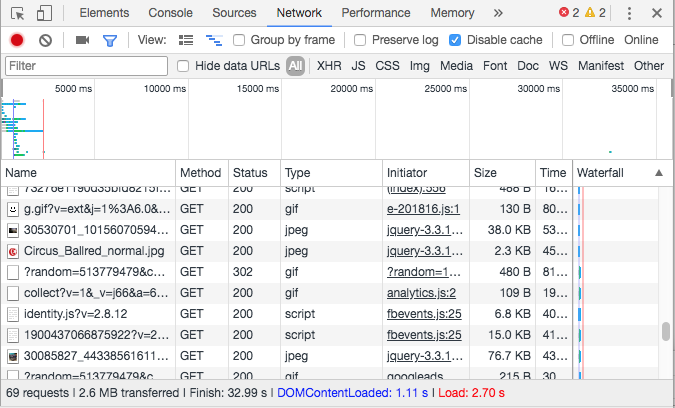

Week 3
Big Images, SVG, Image Optimization
Part 1
Why Images Matter
Websites are getting bigger.
Images account for majority of a page's size.
Big Images Look Good
Every Agency EverHuge
Brightlabs
Hello Monday
Image optimization is the quickest route to improving page performance.
How to Check Image Size
On your computer and in the browser.
Finder / Explorer
List view will have a column.
Column view also shows dimensions.
Chrome Dev Tools

Image Formats
- JPG
- PNG
- SVG
- GIF
Some Sources
JPG
Good for:
- Photographs
- High complexity images
- No transparency
PNG
Good for:
- Illustrations
- Hard edges
- Transparency
SVG
Good for:
- Vector art
- Icons
- Large, simple images
GIF
Good for:
- Nothing
- Animation maybe
- Ugh
General Compression
Tools to give you a good starting point.
Lossless compression, to maintain quality.
gulp-imagemin
Image compression built into the Circus starter.
Desktop Tools
Imageoptim for Mac
FileOptimizer for Windows
Physical Size
Use images at the right dimensions.
You control the CSS, you know the maximum size.
Designers will often hand you much higher res than you need.
Size images for their role
- Background images don't have to be huge
- Use thumbnails or lazy loading for high-res content
Optimizing JPG
Photoshop - Save for Web
You cannot beat the tools here.
Optimizing PNG
Isn't PNG lossless?
Lossy compression with Pngquant.
Optimizing SVG
Talk to your designer.
Multiple Sizes
Presenting different images on different devices.
- picture element
- srcset
These all fall back to regular images.
Srcset
(source set)
Multiple image sources in an image tag
- Property of img element
- Resolution change only
- Let the browser decide
Srcset example

Density
1x, 2x, etc. specify display density.
Use for fixed size images.
Fluid width

Width
480w, 720w, etc. specify the width of the image file.
Sizes
Sizes attribute specifies width of image on the page.
Can use this to define column layout changes.

Picture
Builds off of srcset.
- Use for Art Direction
- Use for multiple image formats
- Browser has little to no control
- Use sparingly
Art Direction
Media queries define image to use.

Image Formats
Browser uses first image format it recognizes.

Spritesheets and Deferred Loading
How to cheat the system
Spritesheets
Fewer image requests is better.
Icons
Let's look at Fontawesome
Animation
You can use background images and background position.
Primal Screen example.
Future Formats
New, better image formats for the web.
- WebP
- HEIF/HEIC
WEBP
Google's format, Blink only.
Based on VP8 video compression.
HEIF
- Apple's format
- Based on H.265 video compression.
- Lot of cool features
- No browser support